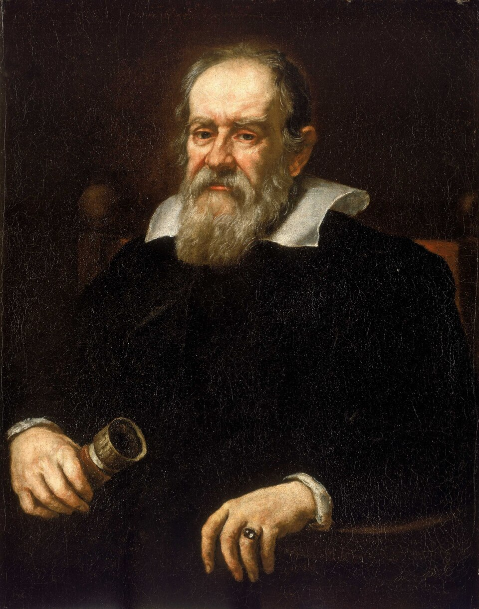
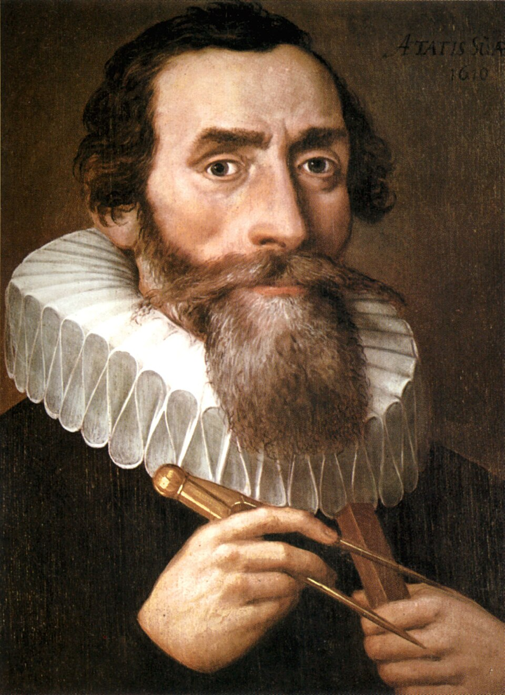
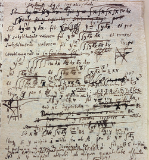

The Illusion of Smoothness: A History of Differentiability
1. Introduction: The Seduction of Smoothness
Walk into any high school calculus classroom around the world, and you will hear a phrase repeated like a sacred mantra:
“A function is differentiable at a point if you can draw its graph without lifting your pen—and without any sharp corners.”
This definition, borrowed almost verbatim from the chapter on continuity, is then reinforced day after day with a parade of friendly polynomials like \(f(x) = x^2\), gentle sinusoids like \(f(x) = \sin x\), and the occasional rational function with a single vertical asymptote.
The absolute value function \(f(x) = |x|\) is trotted out as the sole cautionary tale—the one “bad” function with a corner at zero, offered up like a scapegoat so that all other functions may be declared innocent. The implicit message is unmistakable: the world of functions is, with negligible exceptions, a smooth and well-behaved place where tangents exist at every reasonable point.
But here is the uncomfortable question that generations of calculus students have been subtly discouraged from asking: Why do we believe this? Why does the human mind so naturally, so unthinkingly, equate continuity with smoothness, and smoothness with differentiability?
The answer, as we shall see, is not purely mathematical—it is physical, historical, and deeply psychological. Our intuition was not born in the sterile pages of a textbook; it was born in the silent orbit of planets, the graceful arc of a cannonball, the rhythmic swing of a pendulum, and the gentle ripple of water. We believe in smoothness because we live in a world that, at the scale of human experience, is overwhelmingly smooth.
2. The Physical Roots of Smoothness
To understand why the “smoothness intuition” became so deeply entrenched, we must go back not to the invention of calculus itself, but to the century that preceded it. The scientific revolution of the 17th century, spearheaded by figures like Galileo Galilei and Johannes Kepler, fundamentally transformed how humanity understood motion.

- Galileo’s experiments with rolling balls down inclined planes revealed that the distance traveled was proportional to the square of time—a beautifully smooth quadratic relationship.

- Kepler’s laws of planetary motion, derived from Tycho Brahe’s meticulous astronomical observations, described the orbits of planets as smooth ellipses, with no jumps, no corners, and no discontinuities.
This was the intellectual atmosphere into which Isaac Newton was born. When Newton turned his attention to the problem of motion, he inherited a worldview in which the universe was governed by smooth, continuous laws. His own monumental work, the Philosophiæ Naturalis Principia Mathematica (1687), codified this vision. Newton’s law of universal gravitation:
\[F = \frac{G m_1 m_2}{r^2}\]
is itself a smooth function everywhere except at the singular point \(r = 0\), which physics conveniently excludes. The trajectories it produces—ellipses, parabolas, hyperbolas—are all smooth curves. In Newton’s universe, nothing jumps. Nothing stutters. Everything flows.
When Newton invented the derivative—which he called the “fluxion,” literally a rate of flow—he was not inventing an abstract mathematical operation. He was describing the instantaneous velocity of a moving body. For Newton, every variable was a quantity flowing through time, and the derivative was its velocity at each instant. In such a physical framework, the idea of a function that jitters violently at every point was not merely improbable; it was physically nonsensical. Motion, by its very nature, must be smooth.
3. Leibniz and the Geometry of Infinitesimals
Across the English Channel, Gottfried Wilhelm Leibniz approached calculus from a different angle—but arrived at the same conclusion. Leibniz was a geometer at heart. His derivative was conceived not as a physical velocity but as the slope of a tangent line to a curve. To compute this slope, Leibniz introduced the idea of infinitesimals—infinitely small quantities denoted \(dx\) and \(dy\). The derivative \(\frac{dy}{dx}\) was simply the ratio of these two infinitesimal changes.

Leibniz imagined that any curve, when examined under an infinitely powerful microscope, would reveal itself to be composed of infinitely many infinitesimal straight segments. The tangent line at a point was simply the straight line that coincided with the curve over an infinitesimal interval.
The “Zoom In” Assumption: If you look closely enough, every continuous curve becomes indistinguishable from a straight line.
This assumption was not a theorem—it was an article of faith, a foundational postulate that made calculus work. And because it worked so brilliantly in practice, no one saw any reason to question it.

One of Leibniz’s most significant contributions to mathematics was his notation. The symbol \(\frac{dy}{dx}\) is not merely a convenience—it is a cognitive trap. Its very form implies that the ratio always exists, that the quotient of two infinitesimals is a well-defined number at every point. Generations of students would internalize this notation without ever questioning the hidden assumption buried within it: that the denominator \(dx\) can always be divided into the numerator \(dy\), and that the slope is always finite and well-defined. The notation itself became a silent accomplice in the maintenance of the smoothness illusion.
4. The 18th Century: When Faith Became Dogma
The 18th century was the age of Enlightenment, and in mathematics, it was the age of analysis. Leonhard Euler, perhaps the most prolific mathematician in history, pushed calculus to astonishing new heights. He solved celestial mechanics problems, derived the Euler-Lagrange equations, and gave us the exponential function \(e^x\) and the beautiful identity:
\[e^{i\pi} + 1 = 0\]
Every function Euler encountered was smooth. Every differential equation he solved had nice, well-behaved solutions. The evidence in favor of universal differentiability was overwhelming.
But there was a subtle problem: Euler and his contemporaries did not actually have a rigorous definition of a function. To Euler, a function was any expression constructed from variables and constants using algebraic operations, exponentials, logarithms, and trigonometric functions. In other words, functions were formulas.
And formulas, by their algebraic nature, are built from elementary building blocks that are smooth wherever they are defined. The very definition of “function” in the 18th century excluded the possibility of the monsters that would later haunt mathematics. It was a victim of its own success—the tools were so powerful that no one noticed the logical gaps beneath their feet.
Jean le Rond d’Alembert, another giant of 18th-century mathematics, wrote that “the calculus is the science of continuous quantities” and took it for granted that continuous functions were precisely those that could be represented by a single analytic expression. The circle of reasoning was closed: continuity meant smoothness, smoothness meant differentiability, and differentiability meant calculus worked.
5. Why No One Questioned It
This is the question that haunts the historian of mathematics: How could brilliant minds across two centuries—Newton, Leibniz, Bernoulli, Euler, d’Alembert, Lagrange—all have accepted an assumption that we now know to be spectacularly false? The answer has three parts:
- The Available Examples Supported It: Every function they had ever seen was differentiable almost everywhere. When your entire sample space consists of smooth functions, the generalization to “all functions are smooth” is the most natural inference one could make.
- The Technology Did Not Exist: The construction of a nowhere-differentiable continuous function requires infinite series—a mathematical tool that was not fully understood until the 19th century. You cannot disprove a theorem that has not been precisely stated.
- The Physical World Gave No Hint: Even today, nowhere-differentiable functions do not appear in the macroscopic physical world. Brownian motion, fractal coastlines, and stock market fluctuations are microscopic or emergent phenomena that 18th-century scientists could not observe. Their intuition was perfectly adapted to the world they inhabited.
6. The Calm Before the Storm
By the early 19th century, the assumption that continuity implied differentiability had been repeated so often and by so many authorities that it had ceased to be an assumption at all. It had become an article of faith, a mathematical truism that required no proof.
The French mathematician André-Marie Ampère, famous today for his work in electromagnetism, would soon attempt to provide a rigorous proof of this “obvious” fact—a proof that would turn out to be flawed, but whose very existence testifies to how deeply entrenched the belief had become.
And then, in 1872, a quiet German mathematician named Karl Weierstrass walked into the Berlin Academy and detonated a bomb that would reverberate through the halls of mathematics for generations. He had constructed a function that was continuous everywhere but differentiable nowhere. The smooth universe was a lie. The monsters were real.
And that, as they say, is where our story truly begins.
What Happens Next?
The function that Weierstrass presented that day was not just a mathematical curiosity—it was a declaration of war against two centuries of complacency. It shattered the intuition that Newton and Leibniz had built, the intuition that Euler had taken for granted, the intuition that every calculus student since has been taught.
How did such a monster come to be? What did it look like? And why did the greatest mathematicians of the era recoil from it in horror? For the answers to these questions, we turn to the most terrifying show in the history of calculus…